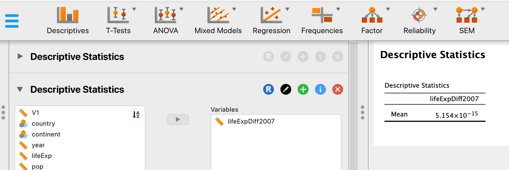
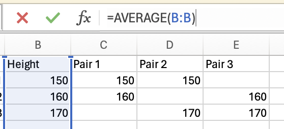

Dispersion (R,Python, Excel)
Red means that the page does not exist yet
Gray means that the page doesn’t yet have separation of different levels of understanding
Orange means that the page is started
In this website you can choose to expand or shrink the page to match the level of understanding you want.
- If you do not expand any (green) subsections then you will only see the most superficial level of description about the statistics. If you expand the green subsections you will get details that are required to complete the tests, but perhaps not all the explanations for why the statistics work.
- If you expand the blue subsections you will also see some explanations that will give you a more complete understanding. If you are completing MSc-level statistics you would be expected to understand all the blue subsections.
- Red subsections will go deeper than what is expected at MSc level, such as testing higher level concepts.
To understand distributions such as the normal distribution, it’s helpful to clarify some more basic concepts around how data is dispersed or spread.
Range
Range simply captures the min(imum) and the max(imum) values. Lets look at the min and max for the life expectancy data from 2007:
# load the gapminder data
library(gapminder)
# create a new data frame that only focuses on data from 2007
gapminder_2007 <- subset(
gapminder, # the data set
year == 2007
)
min(gapminder_2007$lifeExp)[1] 39.613max(gapminder_2007$lifeExp)[1] 82.603# load the gapminder module and import the gapminder dataset
from gapminder import gapminder
# create a new data frame that only focuses on data from 2007
gapminder_2007 = gapminder.loc[gapminder['year'] == 2007]
gapminder_2007['lifeExp'].min()39.613gapminder_2007['lifeExp'].max()82.603You should be able to access an excel spreadsheet of the gapminder data here. To get the minimum you can use the min formula:
However, we want the minimum life expectancy in 2007. To do this, we need to use the minifs formula (which uses similar logic to averageifs):
Which would give us 39.613.
Just use the max function to get the maximum life expectancy across all years:
and the maxifs function to get the max life expectancy in 2007:
82.603
To get the max and minimum values across the whole data, you can use the descriptives interface:
But if you want the minimum and maximum values for just 2007 data, you will need to apply a filter first:
So the range for life expectancy in 2007 was between 39.613 and 82.603.
Variance
Variance is how much the data varies or fluctuates around a mean. If there’s a lot of variance around a mean then that suggests the mean isn’t very representative of your data. Let’s imagine you have 2 sets of 5 pets, and you want to know what the mean height is, and how much variance there is around the mean.
The variance in height among cats is higher than among dogs, as there is very little fluctuation (around the mean) in the dog data, but a lot of fluctuation in height within the cats. Population variance refers to variance when you have measured all items/animals/people within a population. For example, if there were only 5 cats and 5 dogs in the world, then you could calculate the population variance using the height of all 10 of the animals. However, there are quite a lot more than 10 cats and dogs in the world, so it would not be realistic to measure all of their heights. Thus you would calculate the sample variance instead on a sample of cats and dogs (e.g. 5 of each). Importantly, the calculation for the population vs. sample variance are slightly different (see degrees of freedom for an explanation of why), and you will almost always use the calculation for sample variance (as you rarely have every member of a group that you are investigating).
Population Variance
The population variance is a summary statistic of how much data varies around the mean. It does this by calculating the mean squared difference between each data point and the group mean.
Using our pet example from above, we would calculate the average squared distance for cats and dogs by first capturing the difference between the animal’s height and their group mean:
So for dog 1 there was no difference between its height and the mean height for dogs. Dog 2 is 5 centimeters taller than the mean, so the difference is 5. However, dog 3 is 5cm shorter than the mean, so its difference is -5cm. If we calculated the mean before squaring these differences, we would get 0 (\((0 + 5 - 5 + 2 - 2)/5 = 0/5 = 0\)). So we need to square all the numbers to make them positive:
And then we can average of these squared numbers to get our variance score:
\(variance = (0 + 25 + 25+ 4+4)/5 = 58/5 = 11.6\)
To capture this, we do the following steps:
- Calculate how far from the mean each data point is by subtracting the mean from it
e.g. the life expectancy of Afghanistan in 2007 was 43.828, and the mean life expectancy across all countries in 2007 was 67.007, so the difference for this country is \(43.828 - 67.007 = -23.179\)
- Square this difference so that all the differences are positive
For Afghanistan we square the previously calculated difference value \((-23.179)^2 = 537.266\)
- Calculate the mean of all the squared values. This will involve the 2 steps of calculating the mean, summing the squares and then dividing by the number of values:
After doing a similar calculation for all the countries in the world that we did for Afghanistan, when we add together the squares from all the countries, we get \(20551.853\). (see below for a worked through example). There are 142 countries, so we divide this sum of squares by 142: \(20551.853/142 = 144.73\).
\[ \sigma^2 = mean(difference^2) = \frac{\sum((x_i- \bar{x}{} )^2)} {N} \]
To capture this, we compare each individual’s score with the mean, so lets do this with our gapminder data’s life expectancy:
life_expectancy_variance_table <- data.frame(
life_expectancy = gapminder_2007$lifeExp,
diff_from_mean = gapminder_2007$lifeExp - mean(gapminder_2007$lifeExp)
)
rmarkdown::paged_table(life_expectancy_variance_table)import pandas as pd
from tabulate import tabulate
life_expectancy_variance_table = {
'life_expectancy' : gapminder_2007['lifeExp'],
'diff_from_mean': gapminder_2007['lifeExp']- gapminder_2007['lifeExp'].mean(),
}
# convert it to a data frame
life_expectancy_variance_table = pd.DataFrame(life_expectancy_variance_table)
# print the table
print(tabulate(life_expectancy_variance_table[:10], headers=life_expectancy_variance_table.head(), tablefmt="fancy_grid",showindex=False))To calculate the difference from mean, we will subtract the average (i.e. mean) of the life expectancy column from the life expectancy for that country:
However, if we want to focus on just the 2007 data, we will need to calculate a new column that compares each row to the mean life expectancy only for the year 2007:
You can use the add new column functionality (click on the + where you want a new column) to calculate the difference from the mean. We will subtract the mean life expectancy column from the life expectancy for that country:
If you are focusing on just 2007, you would need to calculate the difference of the life expectancy for each country from the mean life expectancy only for the year 2007 (see how there is now [year == 2007]):
So we know for each country how different their life expectancy is to the mean life expectancy. But ideally we would like a single value to summarise variance across all countries.
Lets see what would happen if we tried to summarise these differences from the mean by calculating the mean difference from the mean:
mean(life_expectancy_variance_table$diff_from_mean) [1] 5.153937e-15life_expectancy_variance_table['diff_from_mean'].mean()5.254013186958487e-15We can use the average function to see the mean of the differences across all the data:
And then we can calculate the mean of our new lifeExpDiffMean2007 for just the year 2007 by using averageifs:
Using the same descriptives button as above (e.g. as shown in range), you should be able to calculate the mean of the differences:
To get the mean for just 2007, you would need to apply a filter (see icon in red):
And then you can calculate the mean of the new lifeExpDiff2007 data:

We get a number that is effectively zero (go here for an explanation about e-numbers), because all the values above the mean balance out those below the mean.
As the mean of the differences is zero, we square the differences to force all the numbers to be positive:
life_expectancy_variance_table$diff_squared = life_expectancy_variance_table$diff_from_mean^2
rmarkdown::paged_table(life_expectancy_variance_table)life_expectancy_variance_table['diff_squared'] = life_expectancy_variance_table['diff_from_mean'].pow(2)
# print the table
print(tabulate(life_expectancy_variance_table[:10], headers=life_expectancy_variance_table.head(), tablefmt="fancy_grid",showindex=False))Squaring data can be done by applying the power of (^) 2, so you can do this either for the general difference:
Or the differences based on the mean for 2007:
If we calculate the average of this, then we get the population variance:
mean(life_expectancy_variance_table$diff_squared)[1] 144.7314life_expectancy_variance_table['diff_squared'].mean()144.73136049752028Population variance across all countries and times:

Population variance for just 2007 needs to use the averageifs function to only focus on 2007 rows (you’ll need to zoom in…):
\[ \sigma^2_p = mean(difference^2) = \frac{\sum((x_i- \bar{x}{} )^2)} {N} \]
However, as mean is what you get when you add all the items together and then divide it by the number of items, this can also be done in 2 steps in R (this will help us understand the formula later):
sum_of_squares = sum(life_expectancy_variance_table$diff_squared)
this_variance = sum_of_squares/length(life_expectancy_variance_table$diff_squared)
this_variance[1] 144.7314sum_of_squares = life_expectancy_variance_table['diff_squared'].sum()
this_variance = sum_of_squares/life_expectancy_variance_table['diff_squared'].count()
this_variance144.73136049752028We can represent the above in the following formula for the population’s (remember, this is when you have everyone from the group you are measuring) variance:
\[ \sigma^2 = \frac{\sum((x_i- \bar{x}{} )^2)} {N} \]
Let’s break down each of the above symbols: σ^2 is population variance Σ is sum xi refers to the value for each participant x̄ refers to the mean for all participants N refers to the number of participants
(note that the above is written as if we’re looking at the variance of a group of participants, but the principles still work if looking at non-participant data)
Sample variance
To calculate the variance for a sample of participants, rather than the entire population of the group you’re measuring, you need to correct for the fact you are only measuring a sample, not the entire population (this is explained further in the degrees of freedom section below). This means that instead of calculating the mean of the differences squared (see above), you need to do a slightly different calculation. The normal calculation for mean is the sum of all scores divided by the number of items you have. For sample variance, you correct for uncertainty by dividing by N-1 instead of dividing by N.
Let’s apply this to the dog example above:
Instead of dividing the differences squared (58) and by the number of items (5), we divide 58 by the number of items minus 1 (4):
\(58/(5-1) = 58/4 = 14.5\)
Degrees of Freedom
Degrees of freedom are used to address how analyses of samples can sometimes underestimate dispersion (e.g. variance) that would be found in the population. Degrees of freedom are applied by adapting certain formulas that would normally include an N value (number of items/people/data points) to increase the estimate, e.g. estimated variance. For example, let’s compare the formulas for population vs. sample variance:
| Population variance | Sample Variance |
|---|---|
| \[ \sigma^2 = \frac{\sum((x_i- \bar{x}{} )^2)} {N} \] | \[ S^2 = \frac{\sum((x_i- \bar{x}{} )^2)} {N - 1} \] |
In the population formula you divide by \(N\), in the sample formula you divide by the degrees of freedom \(N-1\). Note that the sample variance formula has \(N-1\) as the denominator (i.e. bottom half), which will increase the estimate compared to having just \(N\) as the denominator.
Degrees of freedom calculations are useful to address statistics that are vulnerable to bias within a sample due to underestimation of the dispersion of the data. Therefore mean is not vulnerable to bias, but variance is. Lets illustrate this by looking at differences between the population and sample for mean and variance in the height of three people. We’ll treat the three people as the population, and combining them into every combination of 2 people possible as our samples. These three people have the heights of 150, 160 and 170cm. The mean of their height is 160cm \((150 + 160 + 170)/3 = 160\). The population variance of their height would be:
\[ \sigma^2 = \frac{\sum((x_i- \bar{x}{} )^2)} {N} = \frac{(150 - 160)^2 + (160-160)^2 + (170-160^2)}{3} = \frac{100 + 0 + 100}{3} = 66.67 \]
We will assess now if on average the calculation of mean and variance in our samples are similar or different to the population mean and variance.
three_heights = c(150,160,170)
population_height_mean = mean(three_heights)
population_height_variance = sum((three_heights - population_height_mean)^2)/3
#sample participants in pairs
sample_heights = data.frame(
pp1 = c(150,150,NA),
pp2 = c(160,NA,160),
pp3 = c(NA,170,170),
pair = c(
"1 and 2",
"1 and 3",
"2 and 3"
)
)
sample_heights$mean = c(
mean(c(three_heights[1], three_heights[2])),
mean(c(three_heights[1], three_heights[3])),
mean(c(three_heights[2], three_heights[3]))
)
sample_heights$pop_var = c(
sum((c(three_heights[1], three_heights[2]) - mean(c(three_heights[1], three_heights[2])))^2)/2,
sum((c(three_heights[1], three_heights[3]) - mean(c(three_heights[1], three_heights[3])))^2)/2,
sum((c(three_heights[2], three_heights[3]) - mean(c(three_heights[2], three_heights[3])))^2)/2
)
sample_heights$sample_var = c(
sum((c(three_heights[1], three_heights[2]) - mean(c(three_heights[1], three_heights[2])))^2)/(2-1),
sum((c(three_heights[1], three_heights[3]) - mean(c(three_heights[1], three_heights[3])))^2)/(2-1),
sum((c(three_heights[2], three_heights[3]) - mean(c(three_heights[2], three_heights[3])))^2)/(2-1)
)
rmarkdown::paged_table(sample_heights)mean_sample_mean <- mean(sample_heights$mean)
mean_sample_variance <- mean(sample_heights$sample_var)
mean_population_variance <- mean(sample_heights$pop_var)import pandas as pd
import numpy as np
three_heights = [150,160,170]
three_heights = pd.DataFrame(three_heights)
population_height_mean = three_heights.mean()
population_height_variance = (three_heights - population_height_mean).pow(2).sum()/3
#sample participants in pairs
sample_heights = {
'pp1': [150,150, np.nan],
'pp2': [160, np.nan, 160],
'pp3': [np.nan, 170, 170],
'pair': ["1 and 2", "1 and 3", "2 and 3"]
}
sample_heights = pd.DataFrame(sample_heights)
mean = [three_heights.iloc[0:2].mean(),three_heights.iloc[[0,2],].mean(),three_heights.iloc[1:3].mean()]
mean = pd.DataFrame(mean)
sample_heights['mean']=mean
pop_var=[
((three_heights.iloc[0] - three_heights.iloc[0:2].mean()).pow(2) + (three_heights.iloc[1] - three_heights.iloc[0:2].mean()).pow(2))/2,
((three_heights.iloc[0] - three_heights.iloc[[0,2],].mean()).pow(2) + (three_heights.iloc[2] - three_heights.iloc[[0,2],].mean()).pow(2))/2,
((three_heights.iloc[1] - three_heights.iloc[1:3].mean()).pow(2) + (three_heights.iloc[2] - three_heights.iloc[1:3].mean()).pow(2))/2
]
pop_var = pd.DataFrame(pop_var)
sample_heights['pop_var']= pop_var
sample_var=[
((three_heights.iloc[0] - three_heights.iloc[0:2].mean()).pow(2) + (three_heights.iloc[0] - three_heights.iloc[0:2].mean()).pow(2))/(2-1),
((three_heights.iloc[0] - three_heights.iloc[[0,2],].mean()).pow(2) + (three_heights.iloc[0] - three_heights.iloc[[0,2],].mean()).pow(2))/(2-1),
((three_heights.iloc[1] - three_heights.iloc[1:3].mean()).pow(2) + (three_heights.iloc[2] - three_heights.iloc[1:3].mean()).pow(2))/(2-1)
]
sample_var=pd.DataFrame(sample_var)
sample_heights['sample_var']=sample_var
sample_heights = pd.DataFrame(sample_heights)
#print(markdownTable(sample_heights.to_dict(orient='records')).getMarkdown())
print(tabulate(sample_heights, headers=sample_heights.head(), tablefmt="fancy_grid",showindex=False))
mean_sample_mean = sample_heights['mean'].mean()
mean_sample_variance = sample_heights['sample_var'].mean()
mean_population_variance = sample_heights['pop_var'].mean()You can access the spreadsheet described below here. There are three participants in our population:
To investigate whether there is bias in estimations of mean and variance when sampling from this population of three, there are three samples of 2 participants that we can analyse:
We can calculate the mean from each pair, and then look at the mean of these means to see if the estimates of mean from the samples are on average different to the actual mean. The actual mean height is 160cm:
And the mean for each pair is the average for the column with that pair in it:

The population variance for each pair is calculated using the var.p (.p for population) function:
The sample variance for each pair is calculated using the var.s (.s for sample) function:
After calculating the mean, population variance and sample variance for each pair, we can average across the estimates for each pair to assess if any of the measures are biased:
JASP doesn’t appear to allow for easy estimations of population variance, and so please check one of the other platforms for the explanation of bias in variance.
When comparing the population mean to the mean sample mean (i.e., what is the typical mean for any sample), they’re identical (i.e. NOT biased):
population_height_mean[1] 160mean_sample_mean[1] 160population_height_mean
mean_sample_mean0 160.0
dtype: float64
160.0Population mean height (i.e. the actual mean across all three people):

The average height across the three pairs of samples:
Both give 160, suggesting that there is no bias in how mean is estimated when analysing samples.
JASP doesn’t appear to allow for easy estimations of population variance, and so please check one of the other platforms for the explanation of bias in variance.
(Note, the mean of a sample may still not be representative of the population, but there is not a systematic bias in the calculation of mean on a sample that biases it).
Whereas when comparing the actual population variance (population_height_variance) to the mean (to identify what is a typical) estimate of variance using the population formula that should not be used for samples (mean_population_variance) finds the estimate of variance is typically smaller than the actual variance in the population:
population_height_variance[1] 66.66667mean_population_variance[1] 50population_height_variance
mean_population_variance0 66.666667
dtype: float64
50.0JASP doesn’t appear to allow for easy estimations of population variance, and so please check one of the other platforms for the explanation of bias in variance.
As this bias (almost) always underestimates the population variance, degrees of freedom is a useful correction to address this within calculations of sample variance. Lets compare the actual population height variance (population_height_variance) to the mean estimate using degrees of freedom that should be used for samples (mean_sample_variance).
population_height_variance[1] 66.66667mean_sample_variance[1] 100population_height_variance
mean_sample_variance0 66.666667
dtype: float64
100.0JASP doesn’t appear to allow for easy estimations of population variance, and so please check one of the other platforms for the explanation of bias in variance.
It might seem that you have to choose between bias of underestimating variance using the population formula, or overestimating variance using the sample formula. It is conservative to err on the side of overestimating variance as that reduces the risk of false positives. The overestimation also will get smaller the larger the sample is, as the relative disparity between \(N\) vs. \(N-1\) gets smaller (for example, dividing by 2 vs. 1 is a big difference compared to dividing by 501 vs. 500).
One thing to remember is that calculation of some statistics does not require use of the degrees of freedom to correct for bias (as seen above, mean was not susceptible to bias).
Standard deviation (SD)
Standard deviation is the square root of the variance. This takes into account that that the variance includes the square of the difference between the individual values and the mean:
| Population | Sample | |
|---|---|---|
| Variance | \[ \sigma^2 = \frac{\sum((x_i- \bar{x}{})\color{Black}{^2}\color{Black})} {N} \] | \[ S^2 = \frac{\sum((x_i- \bar{x}{} )\color{Black}{^2}\color{Black})} {N - 1} \] |
| SD | \[ \sigma = \sqrt\frac{\sum((x_i- \bar{x}{})\color{Black}{^2}\color{Black})} {N} \] | \[ S = \sqrt\frac{\sum((x_i- \bar{x}{} )\color{Black}{^2}\color{Black})} {N - 1} \] |
Effect size
Effect size is basically what it sounds like, it is a measure of how big the effect you are investigating is. You may find a difference between participants or conditions, but effect size calculations give you a sense of whether these are big or small effects. We will use Cohen’s D as an example of an effect size calculation to illustrate this issue.
Cohen’s \(d\) is used to capture the effect size in three situations:
Comparing a set of data against a single value (e.g. how much is life expectancy higher than 55 years)
Comparing two conditions (within-subject; e.g. how much has life expectancy gone up or down between 2002 and 2007)
Comparing two groups of participants (between-subject; e.g. how different is life expectancy between 2 countries)
The general benchmarks for how big or small a Cohen’s \(d\) value are as follows:
.01 is very small (Sawilowsky 2009)
.2 and below is small (Cohen 2013)
.5 is medium (Cohen 2013)
.8 is large (Cohen 2013)
1.2 is very large (Sawilowsky 2009)
2 is huge (Sawilowsky 2009)
Now, you may be thinking that we already had insight into the effect size simply by comparing means, in which we can see that life expectancy has gone up by 1.31 years between 2002 and 2007. That’s true, and depending on your research question you may want to acknowledge whether the change is meaningful (i.e. is one year’s higher life expectancy a big deal?). However, you might not say an average increase of 1.31 years in life expectancy is a large effect if the change of life expectancy is very inconsistent between countries (e.g. some countries life expectancy decreased). Effect size calculation takes into consideration the how consistent the data is and so gives you further insight than a simple mean difference. The large effect size (1.23) confirms that there is a large effect of time on life expectancy, that there is a big difference relative to the general variation in the data.
Note that many tests described later have their own effect size calculations associated with them:
| Test | Effect Size Unit/Test |
|---|---|
| T-tests | Cohen’s \(d\) |
| Correlations | \(r\) |
| Regression | \(R^2\) |
| ANOVAs | \(\eta\) |
Question 1
True or False: Using degrees of freedom (N-1) rather than N controls for bias
Question 2
Which of the following can be negative?